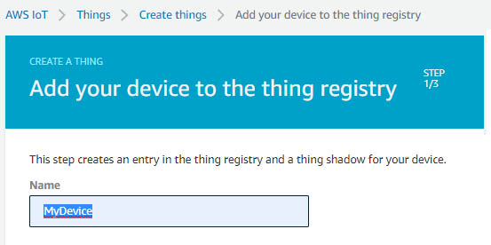
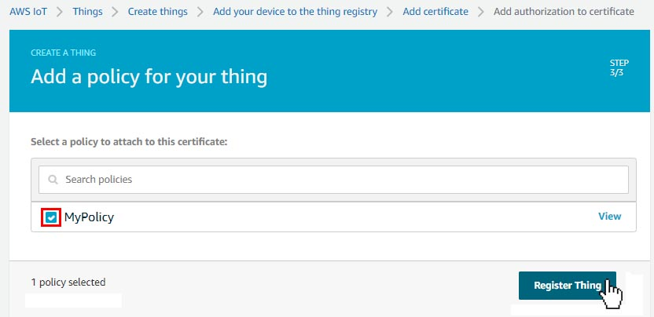
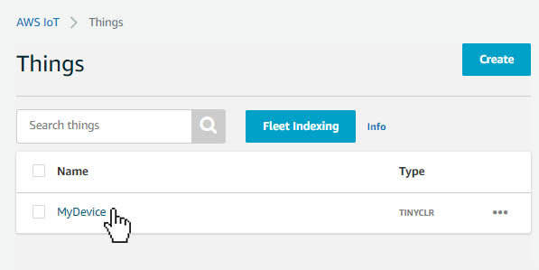

Amazon Web Services
This example shows how to communicate with AWS using MQTT. You'll also need to set up a Network Interface connection on the device such as WiFi to Connect to AWS in your program.
First download the required AWS Root Certificate and add to resources. The TLS Client shows how to download the root certificate.
There is also a Client certificate that needs to be downloaded from the AWS account, detailed below.
var iotEndPoint = "Need your Rest API Endpoint";
var iotPort = 8883;
var deviceId = "Need your Device ID";
var topicShadowUpdate = string.Format("$aws/things/{0}/shadow/update", deviceId);
var topicShadowGet = string.Format("$aws/things/{0}/shadow/get", deviceId);
var message = "{\"state\":{\"desired\":{\"My message\":\"Hello World"}}}";
var caCertSource = UTF8Encoding.UTF8.GetBytes("Need AWS root CA certificate");
var clientCertSource = UTF8Encoding.UTF8.GetBytes("Need your AWS client CA certificate");
var privateKeyData = UTF8Encoding.UTF8.GetBytes("Need your AWS private key");
X509Certificate CaCert = new X509Certificate(caCertSource);
X509Certificate ClientCert = new X509Certificate(clientCertSource);
ClientCert.PrivateKey = privateKeyData;
var clientSetting = new MqttClientSetting {
BrokerName = iotEndPoint,
BrokerPort = iotPort,
CaCertificate = CaCert,
ClientCertificate = ClientCert,
SslProtocol = System.Security.Authentication.SslProtocols.Tls12
};
var iotClient = new Mqtt(clientSetting);
iotClient.PublishReceivedChanged += (p1, p2, p3, p4, p5, p6) => {
Debug.WriteLine("Received message: " + Encoding.UTF8.GetString(p3));
};
iotClient.SubscribedChanged += (a, b) => { Debug.WriteLine("Subscribed"); };
Debug.WriteLine("Connecting....")
var connectSetting = new MqttConnectionSetting {
ClientId = deviceId,
UserName = null,
Password = null
};
var connectCode = iotClient.Connect(connectSetting);
ushort packetId = 1;
iotClient.Subscribe(new string[] { topicShadowGet }, new QoSLevel[]
{ QoSLevel.LeastOnce }, packetId++);
iotClient.Publish(topicShadowUpdate, Encoding.UTF8.GetBytes(message),
QoSLevel.MostOnce, false, packetId++);
We need a few things to complete the code sample that we'll get from AWS. We need an iotEndPoint, a deviceId, an AWS root certificate, a client certificate and a private key. First, you'll need to create an AWS account.
Once you've created your account, we need to find the service to set up our device. On the AWS Management Console, search for the service 'IoT Core' and select it.

Before we add our device, we need to create a Policy that the device will use. From the side menu under the 'Secure' tab click 'Polices' click on the button to create a new policy. Name your policy and then click on advanced mode. Paste the code found below in the code window. Then click the 'Create' button. We'll attach the policy to the device later.

Paste this code in the above window.
{
"Version": "2012-10-17",
"Statement": [
{
"Effect": "Allow",
"Action": [
"iot:Publish",
"iot:Subscribe",
"iot:Connect",
"iot:Receive"
],
"Resource": [
"*"
]
}
]
}
Now we need to create our IoT device within AWS. Click on the 'Manage' Dropdown and select 'Things', then click on 'Register a thing'

Next, we click on 'Create a single thing'

Now we'll create a Name for our IoT device and add it to the 'Things' registry. This will be the deviceId we will use in the code sample. There are other options available that can be added, but in this tutorial, we only need to create a 'Name' and click 'NEXT'

The next page is where we'll create the CA Certificates, we need to add to our projects resources. In this case we can use the 'One-Click certificate creation'. Click on 'Create certificate'

Next we need to download the CA Certificates we need. We need 'A certificates for this thing' and 'the private key', we don't need to download the public key for this project. You'll also need an AWS root certificate, you can follow the link to download RSA 2048 bit key: Amazon Root CA 1. Next we need to click on the 'Activate' button to activate the certificates we created, then click 'Attach a policy'

Check the box for the 'Policy' we created earlier, and then click the 'Register Thing' button.

Add the 3 Certificates we downloaded to Resources in our project and SAVE your project.

Inside the 'Things' registry list click on the device you just created.

Once you're on your devices dashboard, click on the 'Interact' tab. This will give you the iotEndPoint we'll need for our code. Copy the code...

...and paste it into the code as shown below. Also add the name of your device to the variable deviceId.
var iotEndPoint = "a13gxtasnslh-ats.iot.us-west-2.amazonaws.com";
var iotPort = 8883;
var deviceId = "MyDevice";
Finally, we need to link the CA Certificates we placed in our project resources to our code as shown in the example below.
var caCertSorce = Resources.GetBytes(Resources.BinaryResources.AmazonRootCA1);
var clientCertSource = Resources.GetBytes(Resources.BinaryResources._3a59c69926_certificate_pem);
var privateKeyData = Resources.GetBytes(Resources.BinaryResources._3a59c69926_private_pem);
You can now deploy your program in Visual Studio, to connect your device to AWS. Clicking on the 'Activity' Tab on our device dashboard will show the active connection.

We view the messages being sent from our IoT device to AWS by clicking on the 'Shadows' Tab, then click 'Classic Shadows'. The message in the window is sent from our device...

We can edit the message being sent from the device in Visual Studio by changing the message in this line of our code.
var Message = "{\"state\":{\"desired\":{\"My message\":\"Hello World\"}}}";